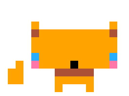

In the early months of 2022 I decided to focus on learning to touch type efficently. It was not something that was taught in my school and as a result my typing was a hallmark of inefficiancy. So I began learning to type using various resources online and practicing using Monkeytype.com. After several months I was touch typing profficiently and working on building high accuracy and speed. In the process, typing had become a sort of game. As a teacher, I thought perhaps I could find a way to gameify typing for my students who are learning English. That way they'd learn not only to type in English, but also hopefully add to their budding vocabularies.
Pico-8 is a type of computer program that emulates the gaming hardware of retro consoles. It is referred to as a fantasy console because there is no official physical hardware. The program is unique in that it imposes a rather strict set of limitations on would be game developers. Effectively it is an 8 bit console, their are a limited number of colours available to use, a limited number of images you can create, a limit to how much code you can write, a limit to what kind of sounds you can make and even a limited number of inputs (for controls). When coding this game I had to be creative in my approach just to get the keyboard to work with this Pico-8. There are a variety of other limitations I had to overcome in the process as well. I may expand on those in the future, so if you're curious be sure to check back here for an update.
I like the style of the games produced in Pico-8. It's also not a programming language I was familiar with, so I got to learn some new skills too! Pico-8 is great because it provides an all in one environment where programmers can experiment without the need for cumbersome software. It's lightweight and all of the tools you might need are available in the software. You can design your characters, make music, maps, draw text and even experiment with cool mathematics.
Actually she's a fox, that is the games mascot Foxy. I thought it would be cute to include a fox in the game because of the popular use of the phrase "The quick brown fox jumps over the lazy dog" when teaching writing. I started playing around with character ideas and she is what I got. Foxy is there to motivate you on your typing join and cheer you on when you might need it most!
